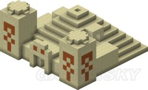
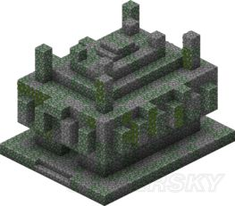

探索-沙漠神庙与丛林神庙
地牢与遗迹的探索-沙漠神庙

沙漠神庙作为遗迹生成在沙漠生态群系，你通常可以在比较大的沙漠中看到至少1-2个（我不敢保证）
一般会自然生成：
沙石平滑沙石錾制沙石染色黏土（1.8之前为染色羊毛）箱子压力板TNT沙石台阶
你需要在沙漠神庙内部中心的染色黏土以及其附近下挖掘才能看见密室，不要踩压力板。因为会触发TNT。
压力板附近每个面都有1箱子，共4个。
箱子战利品：
骨头腐肉火药沙子线蜘蛛眼附魔书鞍金苹果附魔金苹果金锭铁锭绿宝石铁马铠金马铠钻石马铠钻石
（注：1.9加入火药、沙子、线、蜘蛛眼、普通和附魔金苹果）
地牢与遗迹的探索-丛林神庙

丛林神庙会在丛林生态群系自然生成，但是它通常很难发现。
它有拌线钩机关，最好注意脚下。如果你发现了拉杆，那么直接破坏吧（除非你是冒险模式）里面会有一个箱子，中继器，红石与..活塞。神庙的尽头也有一个箱子
你可以把..器挖走或者把里面的箭拿走
通常会自然生成：
圆石苔石楼梯錾制石砖拉杆..活塞红石中继器红石线拌线钩箱子..器
战利品与沙漠神庙相同
你可以直接把地上的线或者拌线钩打掉来阻止..器.箭